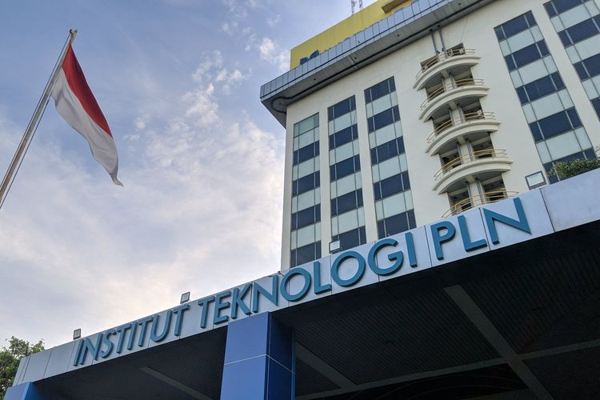

CHAIRINA NABILA
Mahasiswi
Mahasiswi
TK Ade Irma berdiri pada tahun 1980-an hingga sekarang. TK Ade Irma terletak JL. Tusan Gang Pendidikan, No. 48 B, Jatinegara, Binjai, Kota Binjai, Sumatera Utara 20748 tepatnya di belakang rumah saya.
Setelah TK, saya melanjutkan Pendidikan ke Sekolah Dasar 020260 yang letaknya tidak jauh dari rumah. SDN 020260 ini terbilang unik karena terdapat SDN 020264 diseberangnya, sehingga lapangan olahraga dan kantin SD 10 ini berbarengan dengan SD 14.
SMPN 3 BINJAI merupakan satu-satunya sekolah yang sering diperhatikan dan di datangi touris karena letaknya di pusat kota binjai yaitu, di pinggir jalan utama kota binjai, di depan Masjid Agung Binjai dan Mall tertua di kota Binjai yaitu Binjai Supermall. Tidak hanya itu saja, di belakang sekolah ini juga terdapat Stasiun Kereta.
Seiring berjalannya waktu, saya pun masuk ke jenang pendidikan yang leboh tinggi lagi, yaitu Sekolah Menengah Atas (SMA). Hal yang paling saya ingat saat SMA adalah penyampaian guru mengenai libur 2 minggu, teman-teman bersorak merasa senang. Namun, libur 2 minggu menjadi 2 tahun karena Pandemi COVI-19.
Institut Teknologi PLN merupakan perguruan tinggi yang fokus dibidang energi, teknologi yang berwawasan lingkungan untuk pembangunan yang berkelanjutan.
